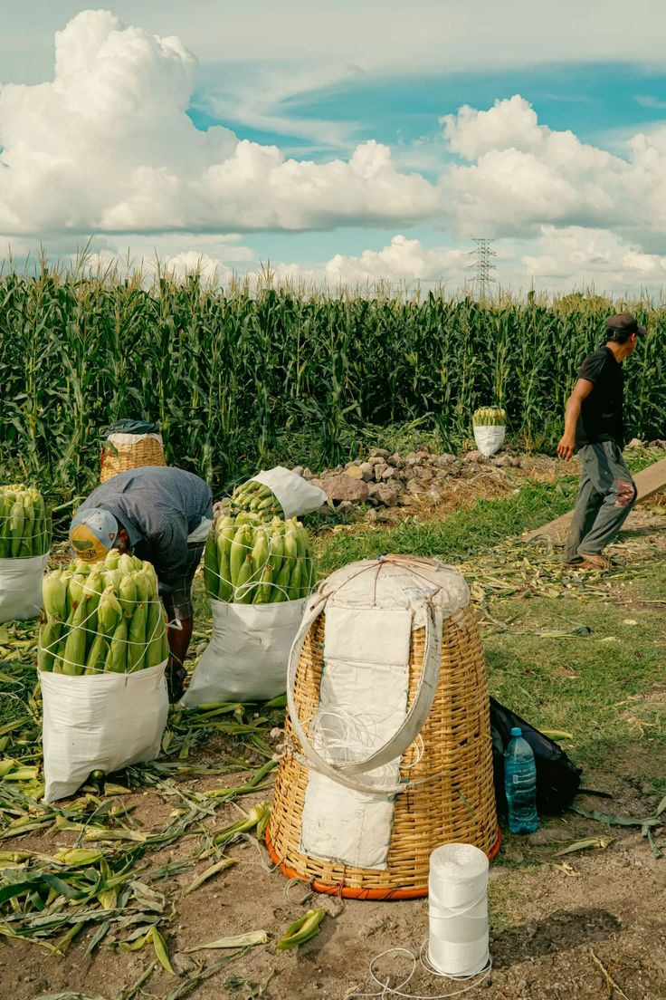
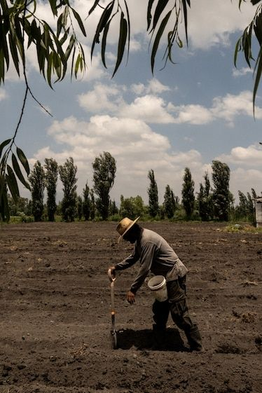
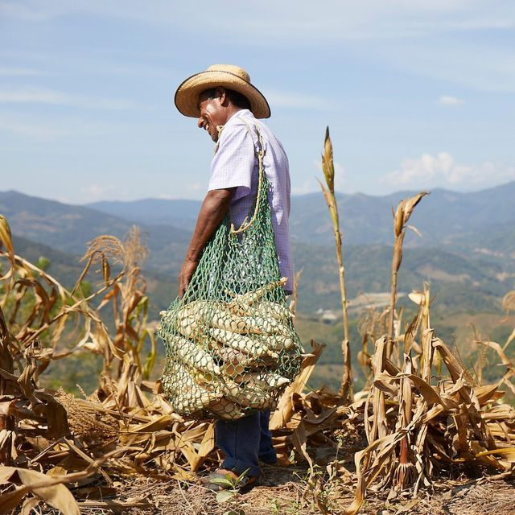

Bienvenue sur notre épicerie en ligne. Vous pouvez passer commande, et venez récupérer vos produits directement au foodtruck !

À propos de nos produits
Chez Señoritos, nous vous proposons une cuisine mexicaine
authentique et conviviale.
Tacos, burritos et nachos sont préparés
maison, avec des produits frais, locaux
et soigneusement sélectionnés.
Nous mettons un point d'honneur à cuisiner sans blé, pour le bien
de tous, tout en conservant des saveurs généreuses et fidèles
à l'esprit du Mexique. Chaque recette et chaque
nom de produit sont pensés pour vous faire voyager.
Avec notre food truck et notre épicerie fine mexicaine,
nous partageons notre passion à travers des spécialités faites
maison, dans le respect des produits et des
personnes qui les préparent.
Señoritos, c'est une équipe passionnée, une
cuisine sincère et un vrai goût du Mexique


L'histoire des producteurs
Chez Señoritos, notre cuisine commence bien avant le food truck. Elle prend
racine dans les champs et chez les agriculteurs locaux avec lesquels nous
travaillons chaque jour. Des femmes et des hommes passionnés, qui cultivent
et élèvent leurs produits avec respect, patience et
savoir-faire.
Nous privilégions les circuits courts, les produits frais
et de saison, ainsi qu'une agriculture responsable. Chaque
ingrédient que nous utilisons est choisi pour sa qualité, son
goût et son origine. Cette relation de
confiance avec nos producteurs nous permet de proposer une cuisine
sincère, faite maison et fidèle à nos
valeurs.
Derrière chaque taco, chaque burrito et chaque produit de
notre épicerie fine, il y a une histoire humaine : celle
d'agriculteurs engagés, amoureux de leur métier, qui partagent avec nous
l'envie de bien nourrir, tout simplement.
